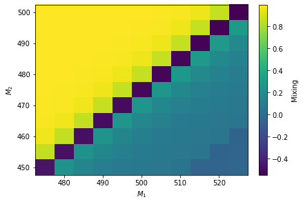

SPheno example
[1]:
import hepi
print(hepi.__version__)
import smpl
import numpy as np
from hepi.run import resummino as rs
import hepi.util as util
from hepi.run import spheno as sp
import matplotlib.pyplot as plt
rs.set_path("~/git/resummino_release")
sp.set_path("SPheno")
print (rs.get_path())
print (sp.get_path())
0.1.8.9+dirty
~/git/resummino_release
SPheno
[2]:
for sq in [2000002,1000002]:
fig, axs = plt.subplots(3, 1, figsize=(12, 12), sharex=True)
fig.subplots_adjust(hspace=0)
for pdf,nlopdf in [("CT14lo","CT14lo")]:
li = [hepi.Input(hepi.Order.LO,13000,sq,1000022,"LesHouches.in",pdf,nlopdf,1., 1.,id="test")]
li=hepi.slha_scan_rel(li,lambda r : [["EXTPAR",1,510],["EXTPAR",2,r]],np.linspace(470.,530.,16))
sp.run(li)
dl = rs.run(li,True,True)
for p in [1000022,1000023,1000025,1000035]:
hepi.slha_plot(li,["EXTPAR",2],["MASS",p],axes=axs[0],logy=True,xaxis="$M_2$ [GeV]",yaxis="$M$",label="$"+hepi.particles.get_name(p)+"$",tight=False)
for nm1 in [1]:
for nm2 in [1,2,3,4]:
hepi.slha_plot(li,["EXTPAR",2],["NMIX",(nm1,nm2)],fmt="-",interpolate=False,xaxis="$M_2$ [GeV]",yaxis="Mixing",logy=False,axes=axs[1],label="$"+"N_{"+ str(nm1)+ str(nm2)+"}$",tight=False)
hepi.vplot(hepi.slha_data(li,["EXTPAR",2]),dl["LO"],plot_data=True,axes=axs[2],xaxis="$M_2$ [GeV]",yaxis= "$\sigma$ [pb]",tight=False,label="$\sigma_{LO}$")
/home/apn/.local/lib/python3.8/site-packages/hepi/input.py:283: RuntimeWarning: Could not set new central scale to average of masses.
warnings.warn("Could not set new central scale to average of masses.",
skipskipskipskipskipskipskipskipskipskipskipskipskipskipskipskipRunning: 16 jobs
/home/apn/.local/lib/python3.8/site-packages/hepi/input.py:283: RuntimeWarning: Could not set new central scale to average of masses.
warnings.warn("Could not set new central scale to average of masses.",
skipskipskipskipskipskipskipskipskipskipskipskipskipskipskipskipRunning: 16 jobs
[3]:
for sq in [2000002,1000002]:
for pdf,nlopdf in [("CT14lo","CT14lo")]:
li = [hepi.Input(hepi.Order.LO,13000,sq,1000022,"LesHouches.in",pdf,nlopdf,1., 1.,id="test")]
#li=hepi.slha_scan_rel(li,lambda r : [["EXTPAR",1,r],["EXTPAR",2,r]],np.linspace(500.,1500.,16*2))
li=hepi.slha_scan(li,"EXTPAR",1,np.linspace(500.,1500.,16))
li=hepi.slha_scan(li,"EXTPAR",2,np.linspace(500.,1500.,16))
sp.run(li)
dl = rs.run(li,True,True)
for nm1 in [1]:
for nm2 in [1,2]:
print(nm2)
hepi.map_vplot(hepi.slha_data(li,["EXTPAR",1]),hepi.slha_data(li,["EXTPAR",2]),
hepi.slha_data(li,["NMIX",(nm1,nm2)]),logz=False,xaxis="$M_1$",yaxis="$M_2$",zaxis="Mixing",show=True)
hepi.map_vplot(hepi.slha_data(li,["EXTPAR",1]),hepi.slha_data(li,["EXTPAR",2]),dl["LO"],xaxis="$M_1$",yaxis="$M_2$",zaxis="$\sigma_{LO}$",show=True)
/home/apn/.local/lib/python3.8/site-packages/hepi/input.py:283: RuntimeWarning: Could not set new central scale to average of masses.
warnings.warn("Could not set new central scale to average of masses.",
skipskipskipskipskipskipskipskipskipskipskipskipskipskipskipskipskipskipskipskipskipskipskipskipskipskipskipskipskipskipskipskipskipskipskipskipskipskipskipskipskipskipskipskipskipskipskipskipskipskipskipskipskipskipskipskipskipskipskipskipskipskipskipskipskipskipskipskipskipskipskipskipskipskipskipskipskipskipskipskipskipskipskipskipskipskipskipskipskipskipskipskipskipskipskipskipskipskipskipskipskipskipskipskipskipskipskipskipskipskipskipskipskipskipskipskipskipskipskipskipskipskipskipskipskipskipskipskipskipskipskipskipskipskipskipskipskipskipskipskipskipskipskipskipskipskipskipskipskipskipskipskipskipskipskipskipskipskipskipskipskipskipskipskipskipskipskipskipskipskipskipskipskipskipskipskipskipskipskipskipskipskipskipskipskipskipskipskipskipskipskipskipskipskipskipskipskipskipskipskipskipskipskipskipskipskipskipskipskipskipskipskipskipskipskipskipskipskipskipskipskipskipskipskipskipskipskipskipskipskipskipskipskipskipskipskipskipskipskipskipskipskipskipskipskipskipskipskipskipskipskipskipskipskipskipskipRunning: 256 jobs
1
2
skipskipskipskipskipskipskipskipskipskipskipskipskipskipskipskipskipskipskipskipskipskipskipskipskipskipskipskipskipskipskipskipskipskipskipskipskipskipskipskipskipskipskipskipskipskipskipskipskipskipskipskipskipskipskipskipskipskipskipskipskipskipskipskipskipskipskipskipskipskipskipskipskipskipskipskipskipskipskipskipskipskipskipskipskipskipskipskipskipskipskipskipskipskipskipskipskipskipskipskipskipskipskipskipskipskipskipskipskipskipskipskipskipskipskipskipskipskipskipskipskipskipskipskipskipskipskipskipskipskipskipskipskipskipskipskipskipskipskipskipskipskipskipskipskipskipskipskipskipskipskipskipskipskipskipskipskipskipskipskipskipskipskipskipskipskipskipskipskipskipskipskipskipskipskipskipskipskipskipskipskipskipskipskipskipskipskipskipskipskipskipskipskipskipskipskipskipskipskipskipskipskipskipskipskipskipskipskipskipskipskipskipskipskipskipskipskipskipskipskipskipskipskipskipskipskipskipskipskipskipskipskipskipskipskipskipskipskipskipskipskipskipskipskipskipskipskipskipskipskipskipskipskipskipskipskipRunning: 256 jobs
1
2


[4]:
dll = {}
sqs=[2000002,1000002]
for sq in sqs:
for pdf,nlopdf in [("CT14lo","CT14lo")]:
li = [hepi.Input(hepi.Order.LO,13000,sq,1000022,"LesHouches.in",pdf,nlopdf,1., 1.,id="test")]
#li=hepi.slha_scan_rel(li,lambda r : [["EXTPAR",1,r],["EXTPAR",2,r]],np.linspace(500.,1500.,16*2))
li=hepi.slha_scan(li,"EXTPAR",1,np.linspace(475.,525.,10+1))
li=hepi.slha_scan(li,"EXTPAR",2,np.linspace(450.,500.,10+1))
sp.run(li)
dl = rs.run(li,True,True)
for nm1 in [1]:
for nm2 in [1,2]:
print(nm2)
hepi.map_vplot(hepi.slha_data(li,["EXTPAR",1]),hepi.slha_data(li,["EXTPAR",2]),
hepi.slha_data(li,["NMIX",(nm1,nm2)]),logz=False,xaxis="$M_1$",yaxis="$M_2$",zaxis="Mixing")
hepi.map_vplot(hepi.slha_data(li,["EXTPAR",1]),hepi.slha_data(li,["EXTPAR",2]),
dl["LO"],xaxis="$M_1$",yaxis="$M_2$",zaxis="$\sigma_{LO}$")
hepi.map_vplot(hepi.slha_data(li,["EXTPAR",1]),hepi.slha_data(li,["EXTPAR",2]),
hepi.slha_data(li,["MASS",1000022]),xaxis="$M_1$",yaxis="$M_2$",zaxis="$MX$")
dll[sq] = dl
hepi.map_vplot(hepi.slha_data(li,["EXTPAR",1]),hepi.slha_data(li,["EXTPAR",2]),
dll[sqs[0]]["LO"]+dll[sqs[1]]["LO"],xaxis="$M_1$",yaxis="$M_2$",zaxis="$\sigma_{LO+LO}$")
skipskipskipskipskipskipskipskipskipskipskipskipskipskipskipskipskipskipskipskipskipskipskipskipskipskipskipskipskipskipskipskipskipskipskipskipskipskipskipskipskipskipskipskipskipskipskipskipskipskipskipskipskipskipskipskipskipskipskipskipskipskipskipskipskipskipskipskipskipskipskipskipskipskipskipskipskipskipskipskipskipskipskipskipskipskipskipskipskipskipskipskipskipskipskipskipskipskipskipskipskipskipskipskipskipskipskipskipskipskipskipskipskipskipskipskipskipskipskipskipskipRunning: 121 jobs
1
2
skipskipskipskipskipskipskipskipskipskipskipskipskipskipskipskipskipskipskipskipskipskipskipskipskipskipskipskipskipskipskipskipskipskipskipskipskipskipskipskipskipskipskipskipskipskipskipskipskipskipskipskipskipskipskipskipskipskipskipskipskipskipskipskipskipskipskipskipskipskipskipskipskipskipskipskipskipskipskipskipskipskipskipskipskipskipskipskipskipskipskipskipskipskipskipskipskipskipskipskipskipskipskipskipskipskipskipskipskipskipskipskipskipskipskipskipskipskipskipskipskipRunning: 121 jobs
1
2
